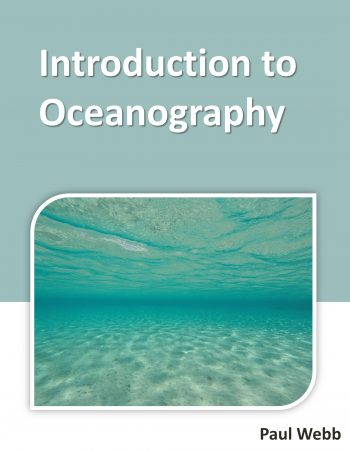

Read each sub-chapter, then answer the questions from each. Re-drawing each diagram will be helpful for
learning purposes.
1.1 Overview of Oceans
Reading
- What percent of the Earth is covered by oceans?
- What is the name of the, disputed, fifth ocean?
- What percent of Earth's water is ground water?
- What is the average depth of the ocean?
1.2 Continental Margins
Reading
- What is an example of an "active" continental margin? What attributes do they have?
- What is an example of a "passive" continental margin? What attributes do they have?
- What is a "continental shelf"?
- What is the "shelf break"?
- What is the continental slope"?
- What is a "turbidity current"?
- What is the "continental rise"?
- What is the abyssal plain?
1.3 Marine Provinces
Reading
- Define the "pelagic zone".
- Define the "benthic zone" and "benthos".
- What are the names of the two (2) provinces in the pelagic zone? Define each.
- How many depth zones are there in the oceanic province of the pelagic zone?
- Define the "abyssopelagic zone", that resides in the oceanic province.
- How many depth zones are there in the benthic environment?
- Define the "bathyal" zone, that resides in the benthic environment.
1.4 Mapping the Seafloor
Reading
- What is the depth of 30 fathams in feet?
- What does "sonar" stand for?
- How are away is something that takes an echo 3 seconds to be heard in m/s (meters per second)?
- How are large-scale mapping operations of the ocean done?
2.1 Latitude and Longitude
Reading
- How many nautical miles are in 3 degree of latitude?
- What two constellations are used for navigation in the Southern Hemisphere?
- Describe how GPS works.
2.2 Measuring Speed